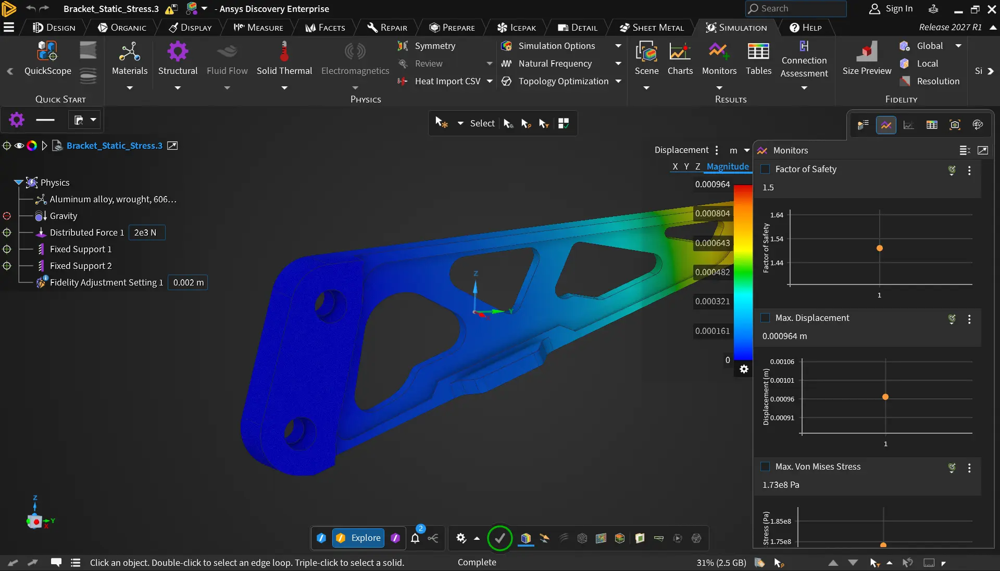

Ansys Discovery:
Giving simulation results more room, without changing how engineers read them
Introduction
A horizontal results legend for Ansys Discovery's UX 2.0 redesign.
In Ansys Discovery, engineers run a simulation and read the results off a color scale. The results legend maps each color on the model to a value.
The legend originally stood upright along the side of the viewport, under and next to the dock panels. The legend and the panels fought for the same space, and the legend sat apart from the results toolbar it works with.

Before: the vertical legend squeezed against the docked panels, away from the results toolbar.
As part of the UX 2.0 redesign, I owned the legend end to end. I changed its orientation so it sits above the results toolbar, in a more central view, and the side of the screen is free for the panels again.
Key insights ✶
I started by taking stock. I mapped every state of the current vertical legend, collected older Discovery legends, and gathered legend inspiration from other tools. Then I listed the edge cases a horizontal layout had to handle, from banded colors to results with three or more variables.

Legend references from other simulation tools.
A vertical legend claims the same side of the screen as the docked panels, so opening a panel crowds the result you're trying to read.
Long-time users have years of muscle memory. A new layout has to feel familiar on day one, with a way back.
How might we give the model and panels more room, while maintaining the way engineers read and adjust results today?
Requirements I designed against
- A horizontal legend that frees space at the side of the viewport.
- Every current interaction keeps working: hover for values, drag to set the range, and the settings panel.
- Users can switch back to the vertical legend.
- The same value count and number formatting as today.
Final design concept ✿
1. A legend that lies flat above the results toolbar
The legend runs across the bottom of the viewport, just above the results toolbar. The right side of the screen now belongs only to the docked panels. It's still draggable, so users can move it off whatever part of the model they're studying.
Still draggable: click and drag to move it.
2. Nothing to relearn
Every interaction from the original vertical legend carries over. The variable picker sits at the left end and opens upward, so it doesn't drop off the bottom of the screen.

Variables on the left open upward.
Hover over the model to see its value on the legend.
Click and drag to change the range.
3. Rotate it back
A rotate button in the settings panel turns the legend back to vertical. Horizontal is the default in UX 2.0, but nobody is forced into it. This choice is what convinced reviewers who doubted a horizontal legend at first.
Rotated back to vertical from the settings panel.
4. The same numbers, read the same way
The legend shows seven values, like the current one. Values follow the user's unit and precision settings and switch to scientific notation past about five digits, so long numbers still fit across the bar.
Prototyping in the real software
A legend is something you use, not just look at. You hover it, drag its range, and watch the colors on the model shift. Static frames cannot show these dynamic interactions.
I used Cursor to build the horizontal legend as a working prototype inside Discovery itself, on real simulation results. Reviewers could hover for values, drag the range, and rotate the legend back to vertical, all on a live model.
Figma still holds the design system: the legend components, every state, and a spec sheet marked ready for development.
The prototype is also the start of the real build. I implemented the legend in our component library and in Discovery for developers to harden.
At the end, I wrote up the changes, the reasons behind them, and the pitfalls I hit as a skill file for developers. That way, the next person or agent to touch the legend starts from what I learned.
How the prototype shaped feedback
I demoed the legend live for leadership, and the reception was very positive. Because reviewers saw it working in Discovery, the questions were about behavior, not looks.
- Doubts were resolved. One reviewer who doubted a horizontal legend going in said it looked really nice. The option to rotate back to vertical is what sold it, and others were glad both stayed available.
- It settled the default. My manager confirmed horizontal will be the UX 2.0 default.
- Real use raised real edge cases. Seeing it next to the results toolbar, a reviewer asked what happens when a toolbar flyout covers the legend. The group agreed covering it is correct. This feedback was addressed in hardening.
- The questions went past the screen. How should the legend appear in reports and screenshots? Should orientation persist per session, per project, or always? Should users set their own default? Those are product decisions a mockup wouldn't have raised.
It was a great starting point to evolve into something production-ready.
A toolbar flyout covers the legend, which the group agreed is correct.
From feedback to pull requests ↳
I turned the review into two pull requests I shipped myself: one in the component library, and one in Discovery. Every open question from the review has an answer in code. Building it in full context also surfaced polish nobody had asked about.
Reflection ♡
Change the layout, not the habits. The legend moved to a new place on the screen, but every interaction stayed the same. When a reviewer asked whether it "acts just like the previous legend," the answer was yes. That's why a big visual change landed easily.
An exit makes change easier to accept. I didn't want to shock people with the change. The option to rotate back to vertical cost little to build, and it turned the most doubtful reviewer into a supporter.
Close the loop in code. Each review question became a line in a pull request. Owning the build meant those answers didn't wait for a ticket queue.
Show it running. Because the legend ran in Discovery itself, the review moved past "does it look right" to focus, persistence, and reports. Those are the questions that decide whether it works in production.
Thanks to the Discovery UX team, my manager, and the developers building this with me.
Thank you for reading! If you have any questions about this project, feel free to email me at bridgit.jung@gmail.com! ✶⋆.˚
next project FreshHold Managing and keeping food fresh